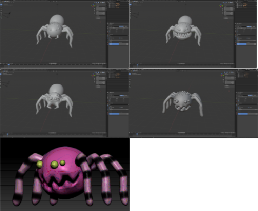
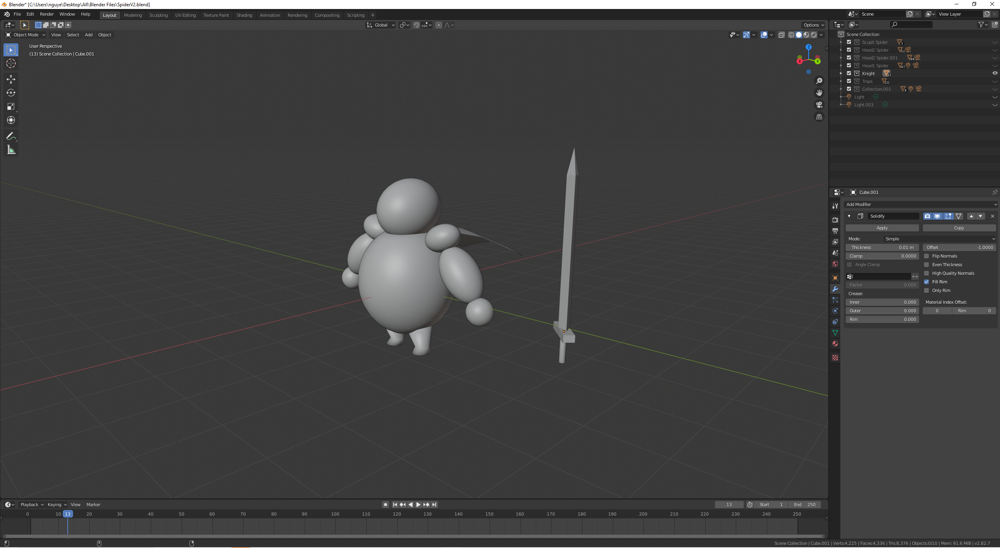

The main obstacles for the player. Enemies will be developed to obstruct players, slowing them down, creating challenges prevent them from passing through to the rest of the level. They will try to contact with the player if they are close enough and dealing with them certain damage prevent players to pass the level. Each type of enemy will have different attack mechanics and difficulty which provided to players variety of experiences while playing required them to be caution each time dealing with any type of enemies. To be more specific, enemies that are living object such as human, creatures, plants. They will have patrol mechanics which allows them to wander in certain areas guarding, waiting for players then detect system if the player it's in range to attack them. However, The pathing given to the enemies should not be too hard to read, or too difficult to pass through, those beginner players would not be able to recognise them.
As a Player, I want to have some challange in game so he can overcome himself.
As a Player, I t to enemies will have different mechanics based on their looks, so the game can be more challenging.
Ben is a high school student, as a teenager Ben is still going to school everyday. Homeworks and assignments are a lots and they are giving Ben a lots of stress so he looking for a game that can help him to relax. A game with simple attractive art, but not boring or too hard and bloody so that he can enjoy it while relaxing from the stress from school.
Jack is a hardcore player, he want the enemies going to be intersting having different behaviours. Enemies that he want is can have a unique indivitual attack or many mechanics.
Depend on the main theme of the level that will decide on how the enemies will look like. For example, for our first level which will be set in a Forest - Village - Medival - fantasy theme so the enemies would likely to be some kind of animals like snakes, spiders or fantasy creature like Golbin, Golem will the most appealing for these themes. Secondly, for the second level that is set place in a medieval castle, there are many enemies which are the best option for this theme such as Knight, Spiders, guard dogs, etc...As for specific aesthetics, our enemies will mainly have circular shape combining with pointy sharpy shape giving the player mixed emotions for their experience between cute and scary. Ultimately, these design and development choices will set the player to many different experiences feeling while playing the game, attract them to start and continues playing.
 Enemies follow the path allocated to each other, and not be impeded by level assets or clip through parts of the level. Test player, especially beginner players, should be able to point out what the path of each enemy is and be able to find a way to pass them. and be able to damage player or even take damage and animation is work right with every state of the character.